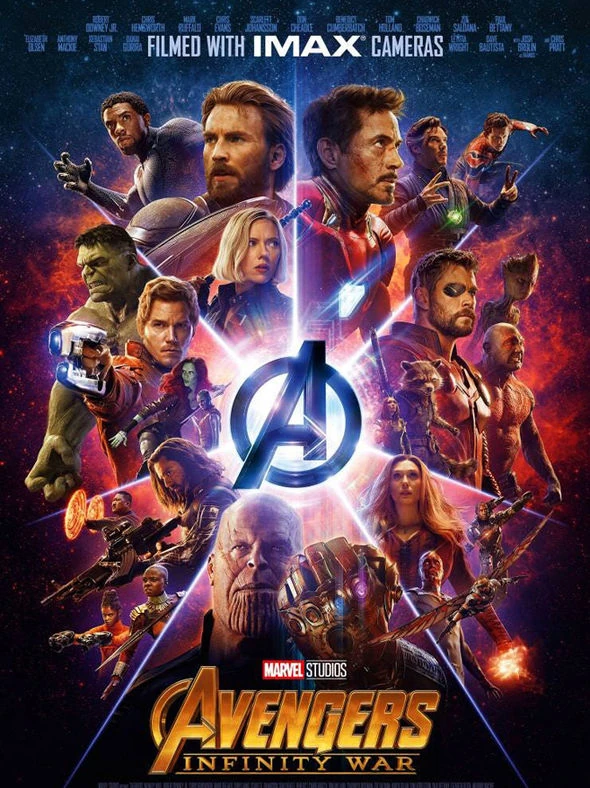

The Top 5 Marvel Movies
#5-Spider-Man: No Way Home

Thrilling and emotional, "Spider-Man: No Way Home" delivers action, humor, and heartfelt moments. The surprises and visual effects are outstanding, while Tom Holland's performance shines. It is the ultimate Spider-Man movie, bringing
together all three of his cinematic versions, making it a must watch for fans of the character.
View Trailer
#4-Captain America: Civil War

"Captain America: Civil War" is a remarkable superhero film exploring loyalty, accountability, and power. It balances an ensemble cast, intense action, and the emotional conflict between Captain America and Iron Man. It is both
thought-provoking and action-packed. While it is named for Captain America, it is basically an Avengers movie, and it is one of the most pivotal in all of the MCU.
View Trailer
#3-The Avengers

"The Avengers" is a monumental superhero team-up with thrilling action, humor, and camaraderie. Joss Whedon's direction brings Earth's mightiest heroes together in an awe-inspiring battle. It is a groundbreaking film for the Marvel
Cinematic Universe, marking the first time that all of the different characters that had been introduced so far were brought together in one movie.
View Trailer
#2-Captain America: The Winter Soldier

"Captain America: The Winter Soldier" is a captivating blend of superhero action and political thriller. Chris Evans shines as Captain America, and the introduction of the Winter Soldier adds intensity. It features excellent fight
choreography and a suspenseful plot that should even intrigue those who are not big Marvel fans.
View Trailer
#1-Avengers: Infinity War

The culmination of the first decade of the MCU, "Avengers: Infinity War" is an epic superhero spectacle with intense action and emotional moments. The Russo brothers skillfully handle a massive ensemble cast, weaving multiple
storylines together. Josh Brolin's portrayal of Thanos is menacing and compelling. It is certainly a must-see film, and is my favorite of all of the Marvel movies.
View Trailer